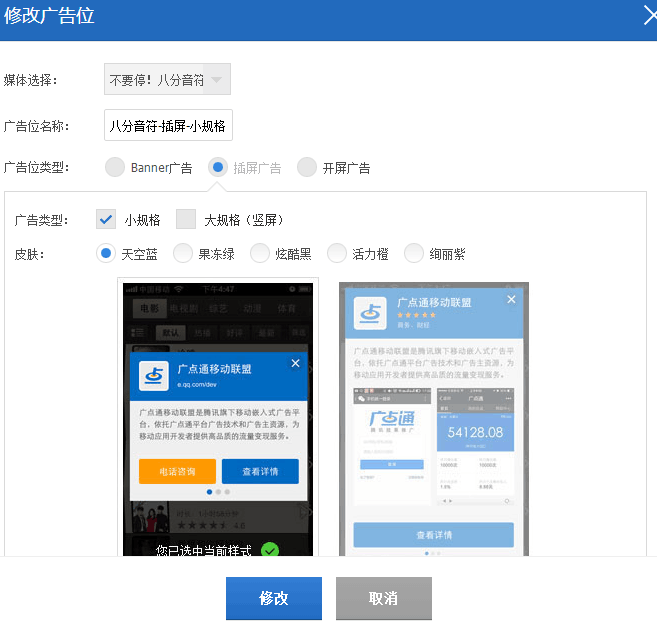

前两天接入了腾讯的广点通。这里记录一下。
首先要在Eclipse里新建广点通的工程，导入他家的jar包和资源，注意：还有unity的class.jar文件，里面包含的UnityPlayerActivity类是我们主activity需要继承的。
按照他们的接入指导添加必要的权限和Activity，这里就不多说了。
下面贴一段调用插屏的代码。
package com.tj;
import android.os.Bundle;
import android.util.Log;
import com.qq.e.ads.interstitial.AbstractInterstitialADListener;
import com.qq.e.ads.interstitial.InterstitialAD;
import com.unity3d.player.UnityPlayer;
import com.unity3d.player.UnityPlayerActivity;
public class MainAdsActivity extends UnityPlayerActivity {
InterstitialAD iad;
String interKey;
String gdtAppid;
boolean IsInterReady = false;
@Override
protected void onCreate(Bundle savedInstanceState) {
super.onCreate(savedInstanceState);
Log.i("AD_DEMO","onADCreate");
}
public void Init(String gdtAppid, String interKey) {
Log.i("AD_DEMO","onADInitWith"+interKey+ gdtAppid);
this.interKey = interKey;
this.gdtAppid =gdtAppid;
getIAD().setADListener(listenInterstitial);
}
AbstractInterstitialADListener listenInterstitial=new AbstractInterstitialADListener() {
@Override
public void onNoAD(int arg0) {
Log.i("AD_DEMO", "onADloadFail:" + arg0);
IsInterReady = false;
UnityPlayer.UnitySendMessage("TjSdk","onGdtEventReceived","LOADREWARDEDFAILED");
}
@Override
public void onADReceive() {
Log.i("AD_DEMO", "onADReceive");
IsInterReady = true;
}
public void onADClosed() {
Log.i("AD_DEMO", "onADClose");
UnityPlayer.UnitySendMessage("TjSdk","onGdtEventReceived","HIDDENREWARDED");
}
};
public void GetInterstitial() {
Log.i("AD_DEMO", "onADloadAds");
this.runOnUiThread(new Runnable()
{
@Override
public void run() {
iad.loadAD();
}
});
}
public boolean IsInterstitialAvailable() {
Log.i("AD_DEMO", "onADIsLoad "+IsInterReady);
return IsInterReady;
}
public void ShowInterstitial() {
this.runOnUiThread(new Runnable()
{
@Override
public void run() {
Log.i("AD_DEMO", "onADShowInterstitial");
iad.show();
IsInterReady = false;
}
});
}
public void closeAsPopup() {
if (iad != null) {
iad.closePopupWindow();
}
}
private InterstitialAD getIAD() {
if (iad == null) {
iad = new InterstitialAD(this, gdtAppid,
interKey);
}
return iad;
}
}
using UnityEngine;
using System.Collections;
/// <summary>
/// 广电通调用android方法
/// </summary>
public class GdtCallAndroid
{
public static void Init (string[] key)
{
using (AndroidJavaClass unityPlayer = new AndroidJavaClass("com.unity3d.player.UnityPlayer"))
{
AndroidJavaObject curActivity = unityPlayer.GetStatic<AndroidJavaObject>("currentActivity");
curActivity.Call("Init", key [0], key [1]);
}
}
public static void GetInterstitial ()
{
using (AndroidJavaClass unityPlayer = new AndroidJavaClass("com.unity3d.player.UnityPlayer"))
{
AndroidJavaObject curActivity = unityPlayer.GetStatic<AndroidJavaObject>("currentActivity");
curActivity.Call("GetInterstitial");
}
}
public static bool IsInterstitialAvailable ()
{
using (AndroidJavaClass unityPlayer = new AndroidJavaClass("com.unity3d.player.UnityPlayer"))
{
AndroidJavaObject curActivity = unityPlayer.GetStatic<AndroidJavaObject>("currentActivity");
return curActivity.Call<bool>("IsInterstitialAvailable");
}
}
public static void ShowInterstitial ()
{
using (AndroidJavaClass unityPlayer = new AndroidJavaClass("com.unity3d.player.UnityPlayer"))
{
AndroidJavaObject curActivity = unityPlayer.GetStatic<AndroidJavaObject>("currentActivity");
Debug.Log("Gdt Call ShowInterstitial");
curActivity.Call("ShowInterstitial");
}
}
}
在我们接入的时候横屏总是展现不了。这里要设置一下小规格就OK啦(找了好久😂) 
这样就好啦。是不是很easy。
还有一个调用静态方法的例子吧。
都放在代码文件夹下的广点通接入文件夹里了。自己去拿吧。